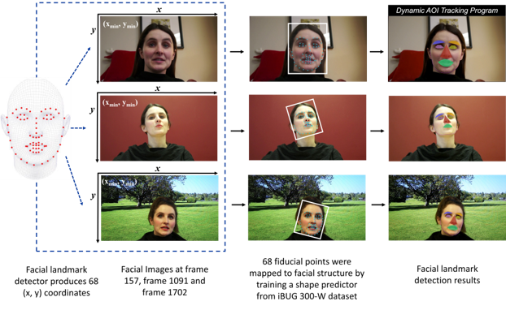
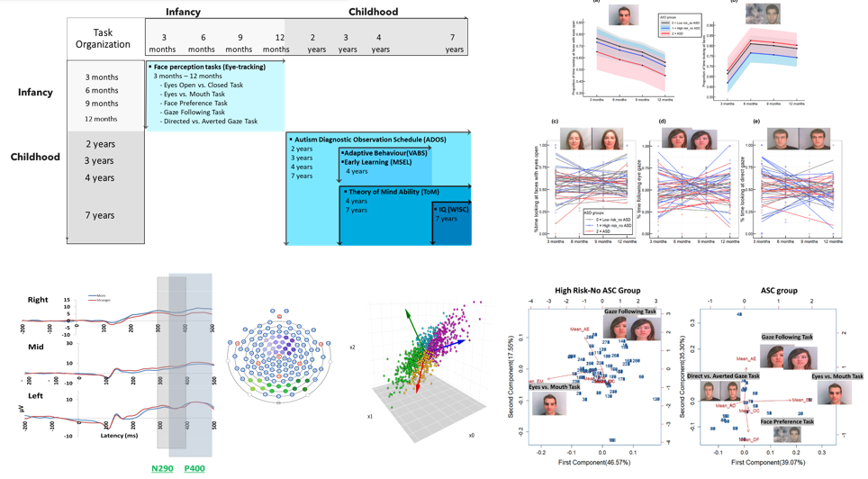
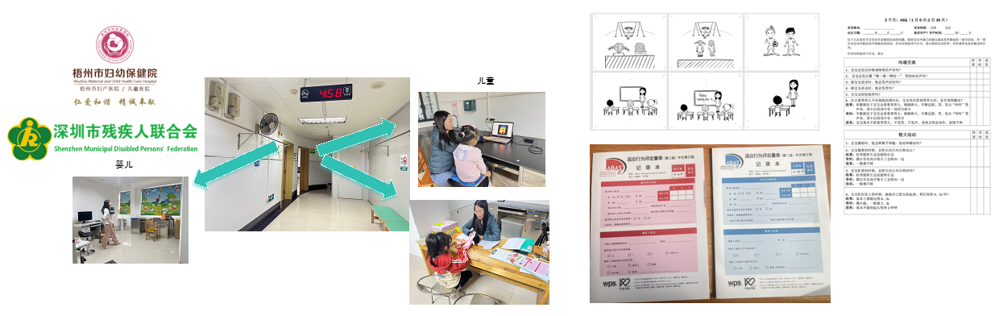

研究项目
婴儿多维自然变化的注意机制研究: https://journals.sagepub.com/doi/10.1177/09567976211030630
比如2021年，我们发表在心理学顶刊的文章，结合AI技术，研发了高精度动态视频的AI面孔68位关键点定位，实现了AI和眼动结合的婴儿百万注视点数据的自动化分析。
用由伦敦帝国理工学院的AI工程师团队开发的形状预测器，基于I-BUG 300数据集，生成ai的面孔检测算法形成68个位面孔参考点。这些参考点映射到模特的特定面部结构，产生随面部的动态变化，光影变化和角度等各类自然变化的精准面孔地标。用以提取关键面部特征、检测头部姿势、遮挡，表情，自动化分析婴儿眼动注视点位置，告诉我们婴儿如何进行面孔学习。
12年孤独症儿童婴儿期至童年期面孔和社会认知的前瞻追踪研究: https://srcd.onlinelibrary.wiley.com/doi/full/10.1111/cdev.14144
比如，在去年我们发表在发展心理学顶刊的一项研究中，执行了一项12年的孤独症婴儿-儿童面孔和社会认知项目，追踪了300余名有高低遗传风险的孩子从3个月到12岁的发展，利用线性混合模型、主成分分析、隐马尔可夫等计算机建模揭示了孤独症早期面孔识别的发展模式和环境影响因素
婴儿和儿童自然动态变化面孔知觉学习、适应功能、心理理论的发展
目前，我们与深圳市残联、梧州妇幼保健医院建立了直接联系，深入一线去测试孤独症风险婴儿、儿童，与孤独症父母直接交流。实验室同学创造性地研发了知觉、情绪和道德发展的多维心理理论测量方法，我们希望利用面孔知觉的视角，开发适合孤独症孩子的面孔知觉学习干预方案。